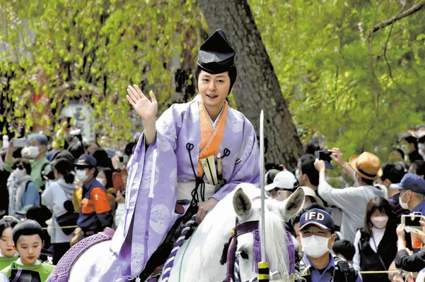

盛岡さんさ踊りは岩手県盛岡市で毎年8月1日から4日にかけて行われる祭りである。パレード形式で行われ、中央通り一帯を盛岡市役所前から踊りながら進む。
企業、学校などがチームで参加していて、各団体は、おおむね太鼓、笛、踊りの3パートから構成されている。最も多い数の和太鼓の
演奏としてギネス世界記録にも認定されており、4日間で踊り手2万人、太鼓は1万2,000個、笛は2,500人と大規模なものになっている。
祭りの最後には、個人で飛び入り参加が可能な「輪踊り」が行われ、観客も一緒になって踊ることができる。
また、前夜祭やよさこいさんさなどのイベントもあり、毎年大きく盛り上がる。岩手の代表的な夏祭りといえる。

藤原まつりとは、岩手県西磐井郡平泉町で毎年5月と11月に開催される奥州藤原氏の祭りであり、春の藤原まつりと秋の藤原まつりがある。中尊寺や毛越寺で郷土芸能、
能や狂言の奉納が行われ、最終日には巨大な餅を抱えて運ぶ「弁慶力餅競技大会」が平泉駅前で開催される。特に有名なのが、総勢約100名の参加者で平安絵巻を再現する、「源義経公東下り行列」である。
義経公役は俳優などの男性芸能人が務めており、例年16万人から18万人程の見物客が訪れる。特に2005年に行われた東下り行列には、当時放送中のNHK大河ドラマ『義経』で主演を務めていた滝沢秀明が参加したことで話題を集め、
過去最高の２８万人にもなった。他にも藤原竜也や吉沢亮、横浜流星などの人気俳優が出演しており、毎年多くの観光客が訪れる。